Sempre in carta
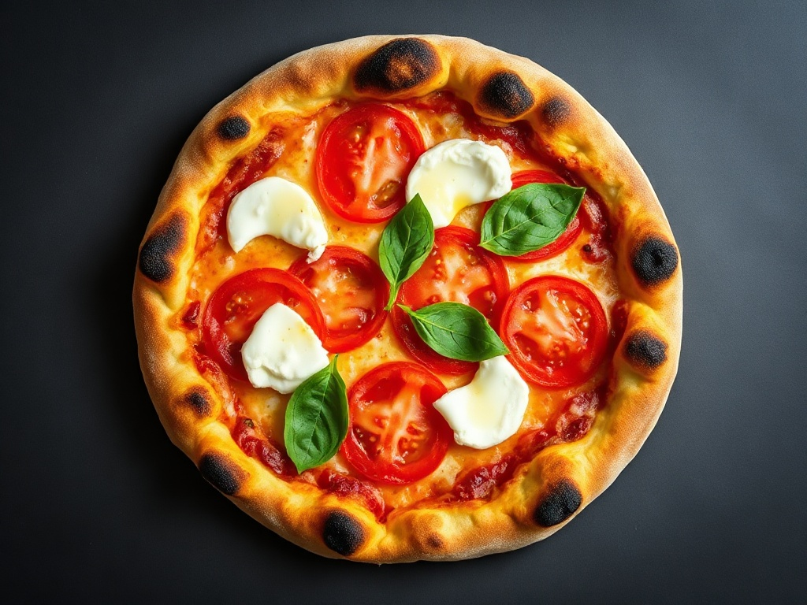
Margherita8 €
Pomodoro San Marzano, fiordilatte, basilico, filo d'olio. La prova del forno.
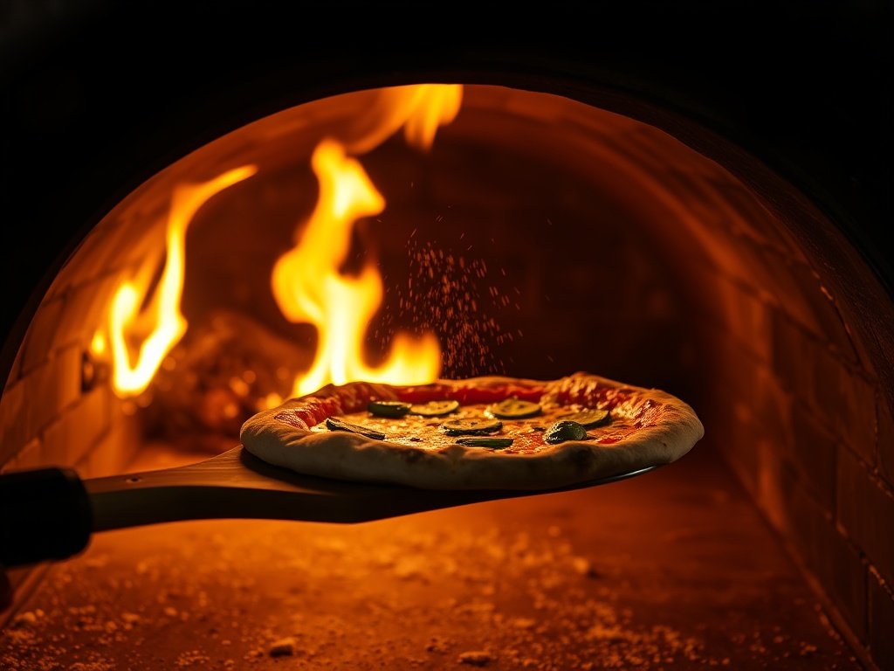
Pizza napoletana al forno a legna, due volte al giorno. Impasto a lievitazione naturale di 48 ore, tirato a mano, cotto in pochi secondi — non una consegna qualsiasi.
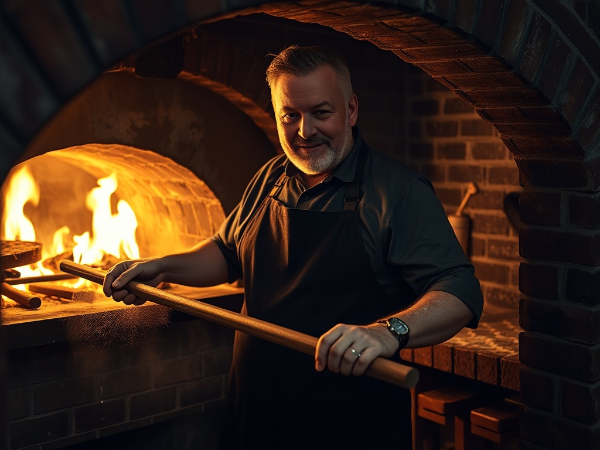
Il cuore del locale è un forno a legna acceso ogni servizio. La cupola arriva a temperatura, il fornaio infila la pala e la pizza cuoce in una manciata di secondi: il cornicione si gonfia, si macchia, prende il profumo del fuoco. È il gesto — e la mano che lo fa — che una cucina di sole consegne non può imitare.
Ogni pizza esce al bancone appena sfornata. Nessun tempo di attesa in uno zaino: il momento giusto per mangiarla è adesso, seduti a due passi dal forno.
Una lista corta che ruota con la stagione. Prezzi chiari, ingredienti dichiarati: scegli la pizza prima ancora di sederti.

Pomodoro San Marzano, fiordilatte, basilico, filo d'olio. La prova del forno.
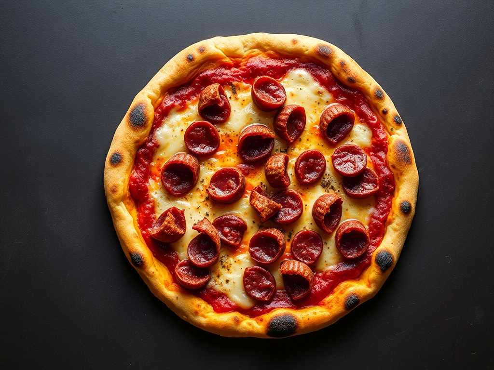
Salame piccante che si arriccia in cottura, fiordilatte, peperoncino, cornicione bruciacchiato.
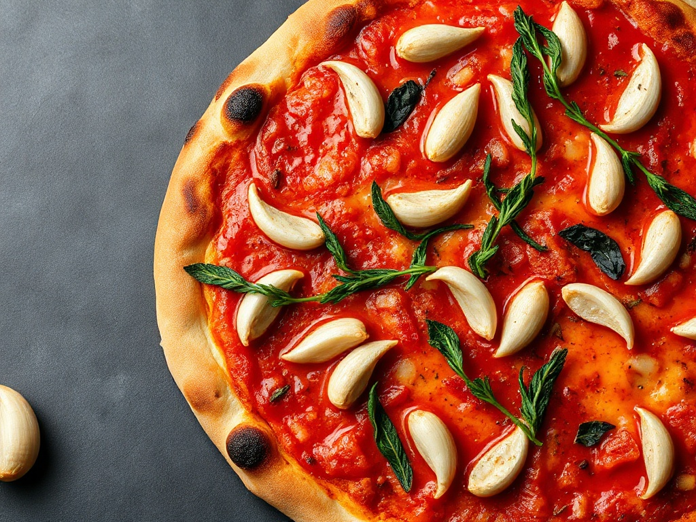
Pomodoro lucido, aglio in lamelle, origano. Solo impasto e fuoco: la più onesta.
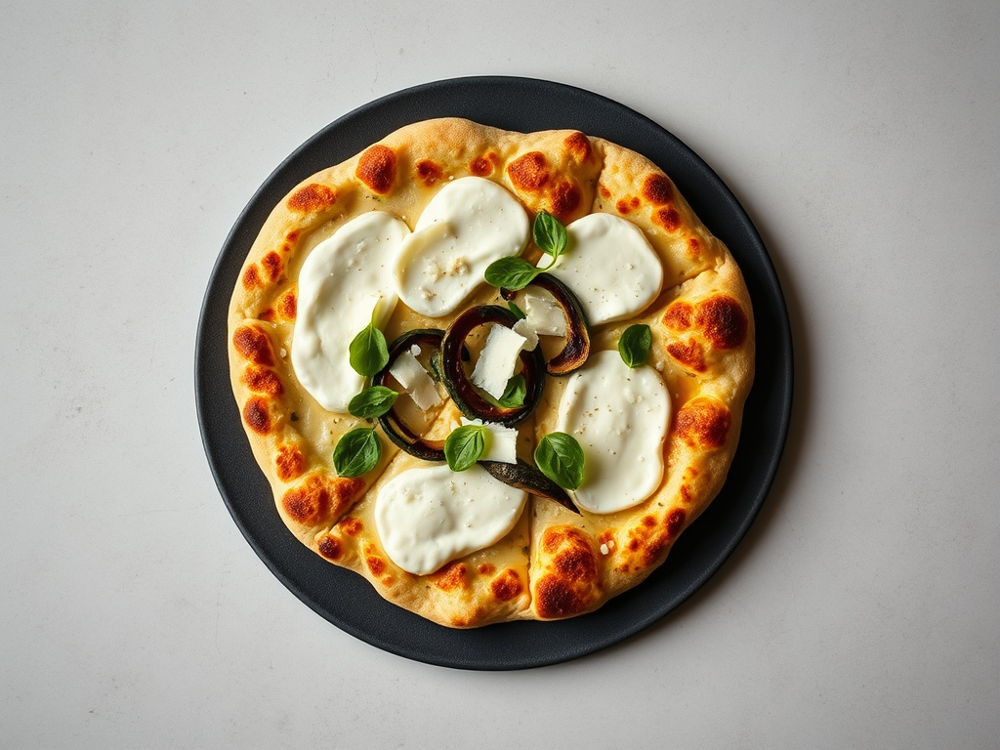
Fiordilatte, verdura del mercato (porcini o zucchine), scaglie di formaggio, crosta dorata.
Prezzi indicativi a titolo dimostrativo: il listino definitivo e le pizze in rotazione sono confermati dal ristorante.
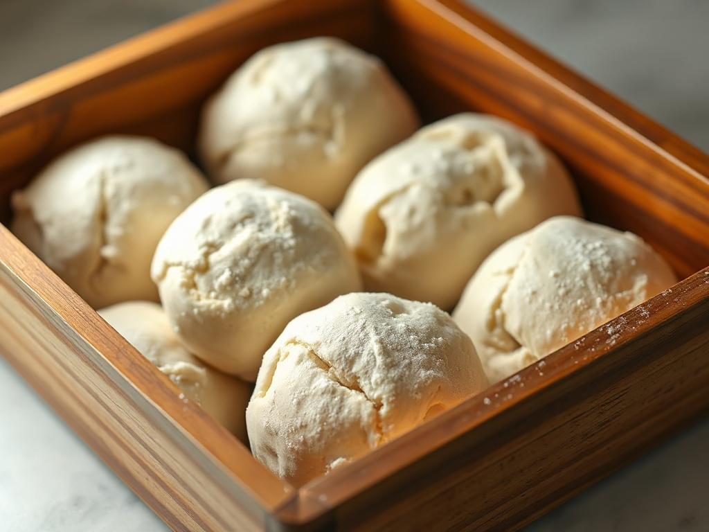
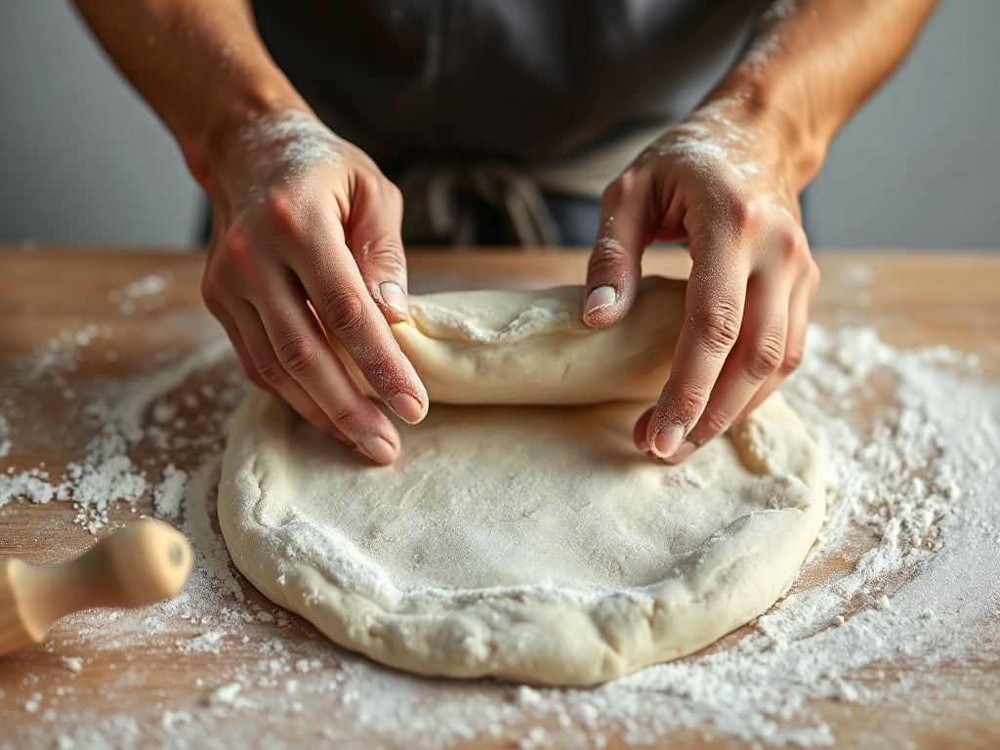
Ora 0 · Impasto
Pochi ingredienti, tanta idratazione. L'impasto nasce lento, senza forzature, con lievito naturale.
Ora 2 · Puntata
La massa riposa e prende forza. È qui che si costruisce la leggerezza del cornicione.
Ora 24 · Staglio
Divisione a mano nei panetti, poi di nuovo a riposo in cella. Bolle vive, profumo dolce.
Ora 48 · Stesura
Il disco si allarga con i polpastrelli, l'aria resta nel bordo. Nessuna pressa, nessuna scorciatoia.
Ora 48 · Cottura
Settanta secondi sulla platea rovente. Due giorni di lavoro chiusi in un minuto di fuoco.
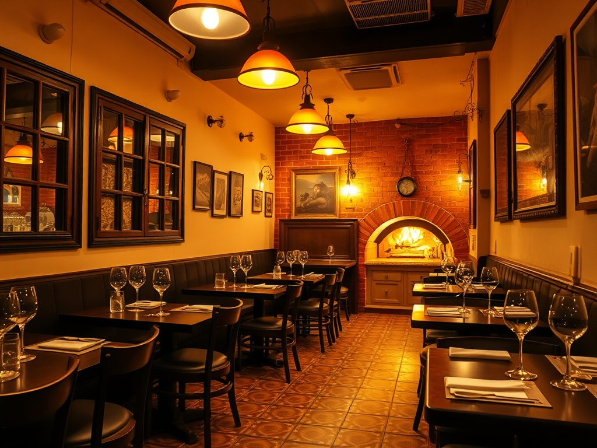
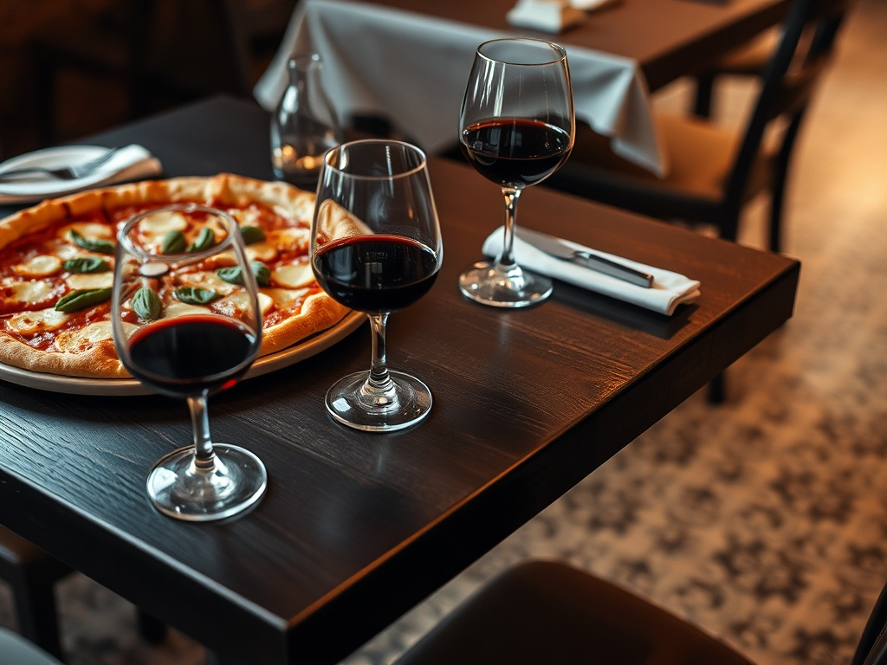
Pavimento a piastrelle, tavoli di legno scuro, luce calda e il bagliore del forno sul fondo. Una stanza d'angolo che dà da mangiare allo stesso quartiere da anni — il posto giusto per una pausa pranzo vera o una cena infrasettimanale senza fretta.
Ordine N.º 05 — Prenota
Manda la richiesta con giorno, orario e coperti: ti richiamiamo noi per confermare. Oppure, per fare prima, chiama direttamente il ristorante.
Il tagliere cambia perché cambia il banco. La verità del prodotto arriva prima della ricetta: pomodoro, mozzarella, basilico, olio — scelti freschi, non ordinati a scatola chiusa. È il motivo per cui vale la pena tornare: la carta non è mai identica a se stessa.
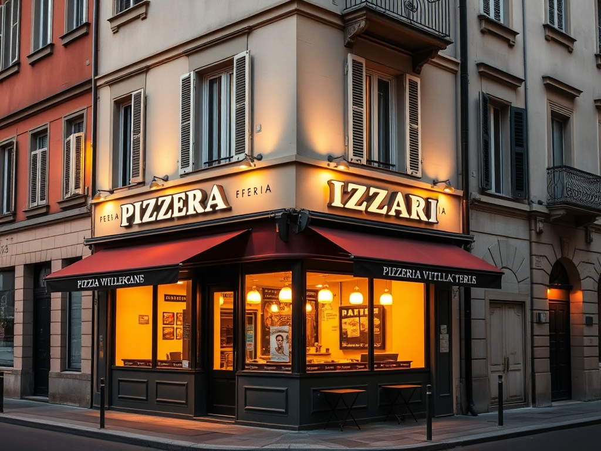
Quartiere Bande Nere / De Angeli, Milano ovest — a due fermate di metropolitana da Piazza Duomo. L'angolo con le vetrine calde al calar della sera.
Chiama per verificare disponibilità e orari del giorno: +39 339 675 5915.
su 596 recensioni
Valutazione media · Google
Un giudizio costruito su quasi seicento voci del quartiere — non una manciata di opinioni, ma un flusso costante di clienti che tornano per la stessa pizza fatta come si deve.
Il sentimento che torna più spesso nelle recensioni: un impasto leggero, il profumo del forno a legna e l'accoglienza di una pizzeria di quartiere. Sintesi del tono generale delle recensioni pubbliche — non una citazione attribuita.